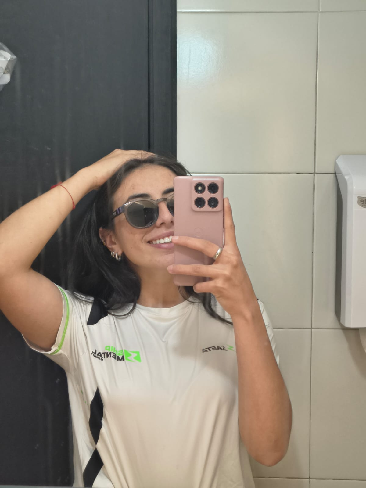

PeakMind nace de mi experiencia en prácticas de psicología deportiva. No como un proyecto perfecto ni como un espacio completamente estructurado, sino como el reflejo real de lo que significa estar en formación, aprender desde el campo y crecer mientras acompaño procesos de rendimiento.
Cada sesión, cada evaluación y cada conversación con deportistas me enseñó que el rendimiento no es solo físico, y que detrás de cada competencia hay una mente gestionando presión, expectativas y emociones.

Maria José Salazar
Estudiante · Psicología Deportiva
Soy estudiante de psicología con una profunda curiosidad por entender cómo funciona la mente bajo presión.
Crecí rodeada del deporte y siempre me llamó la atención que los grandes atletas no solo son físicamente talentosos, sino que tienen algo diferente en su forma de pensar.
«No vine a las prácticas a aplicar lo que ya sabía. Vine a descubrir lo que todavía no sabía que necesitaba aprender.»
Fuera del ámbito académico, soy una persona curiosa, empática y apasionada por las conversaciones profundas. Me interesa entender a las personas, sus motivaciones y sus historias. Creo que esa curiosidad es lo que me hace conectar bien con los deportistas.
Estas prácticas en Ship Mental Sport fueron mi primera experiencia real en campo. No tenía todas las respuestas, pero sí tenía disposición, honestidad y muchas ganas de aprender. Y eso, al final, fue suficiente para empezar.
Llegar a Ship Mental Sport por primera vez fue una mezcla de emoción y vértigo. Había estudiado teorías, practicado conceptos en el aula… pero nada me había preparado del todo para el primer momento en que me encontré frente a un deportista de alto rendimiento, esperando que yo tuviera algo valioso que ofrecerle.
Recuerdo sentir esa presión de «¿lo estoy haciendo bien?» en casi todas las sesiones iniciales. Con el tiempo, aprendí que esa pregunta en sí misma era una señal saludable: significa que te importa, que estás presente, que no te has vuelto indiferente. La inseguridad se fue transformando poco a poco en confianza, no porque dejé de cometer errores, sino porque aprendí a confiar en el proceso.
«Hubo días en los que salí de las sesiones sintiéndome completamente insuficiente. Y días en los que salí sabiendo que había hecho una diferencia real. Aprendí a vivir con los dos.»
Aprender a trabajar dentro de un equipo profesional ya formado fue uno de los mayores retos. Llegué con mis propias ideas y formas de hacer las cosas, y tuve que aprender a leer los ritmos del grupo, sus dinámicas no dichas y sus expectativas implícitas.
Hubo momentos de tensión, de malentendidos, de sentir que no encajaba del todo. Pero también hubo compañeros que se convirtieron en referentes, en personas que me mostraron cómo se ve el trabajo bien hecho desde adentro. Ese contraste fue invaluable.
Trabajar directamente con deportistas fue la experiencia más formadora de todas. Cada uno llegaba con su historia, sus bloqueos, sus metas y su propio ritmo. No había dos procesos iguales, y eso me obligó a salir del piloto automático constantemente.
Lo que más me sorprendió fue la vulnerabilidad. Atletas que desde afuera parecen invencibles, adentro cargaban miedos muy humanos: el miedo a fallar, a decepcionar, a no ser suficientes. Acompañar eso fue un privilegio que no esperaba.
Quizás los aprendizajes más inesperados fueron los que tuvieron que ver conmigo. Las prácticas fueron un espejo que no pedí pero que necesitaba.
Aprendí que no siempre puedo saber si lo estoy haciendo bien en tiempo real. A veces los resultados de una sesión se ven semanas después, y aprender a confiar en el proceso sin certeza inmediata fue uno de los aprendizajes más difíciles y más valiosos.
Sin quererlo, proyecté expectativas, interpretaciones y supuestos en varios momentos. Reconocerlo fue incómodo pero necesario. La reflexión constante se volvió una herramienta indispensable.
No puedo acompañar bien desde el agotamiento o la ansiedad. Entendí que mi bienestar no es un lujo sino una condición para hacer un trabajo de calidad.
En un entorno de alto rendimiento donde todo se mide y se apresura, aprender a sostener la calma y esperar el momento adecuado para intervenir fue un aprendizaje profundo.
Cada colega fue un maestro a su manera, aunque no siempre de la forma en que lo esperaba.
Observar cómo los profesionales del equipo transmitían información técnica a los deportistas de forma clara y respetuosa me dio un modelo que quiero replicar en mi práctica futura.
Vi cómo los profesionales negociaban perspectivas diferentes sin que ninguno tuviera que «ganar». La colaboración real es un equilibrio delicado entre convicción y apertura.
Hubo momentos en que una perspectiva más fresca, menos condicionada por la rutina, aportó algo valioso. La experiencia es un activo enorme, pero no exime de la reflexión continua.
Si tuviera que elegir una sola fuente de aprendizaje de estas prácticas, elegiría a ellos sin dudarlo.
Un deportista que «falla» en competencia no necesariamente tiene problemas de habilidad. A veces es el entorno, la relación con su entrenador, o algo que está ocurriendo en su vida personal. La psicología tiene que mirar el sistema completo.
Varios deportistas me mostraron cómo haberse definido completamente como «atletas» los dejaba sin recursos cuando el rendimiento bajaba. El trabajo de ampliar la identidad fue de los más sensibles y más necesarios.
Los deportistas no necesitan que les impresiones con herramientas. Necesitan sentir que los ves, que los escuchas de verdad y que no tienes un guion preparado para su historia.
Ver cómo los entornos de presión externa podían erosionar el amor genuino por el deporte me hizo entender una de las tareas más importantes del psicólogo deportivo: cuidar esa llama interna.
No todo lo que estudié en la carrera llegó igual al campo. Algunas cosas se confirmaron, otras se complejizaron, y algunas simplemente no funcionaron como esperaba.
En teoría, cada deportista tiene una zona de activación ideal. En la práctica, identificar esa zona con precisión y acompañar su regulación en tiempo real es mucho más complejo. El contexto importa enormemente.
Llegué algo escéptica sobre la aplicación del mindfulness en entornos de alto rendimiento. Las prácticas me mostraron que, cuando se usa con intención y no como receta universal, tiene efectos reales y medibles en la concentración y el manejo de la presión.
Aprender a seleccionar, adaptar y aplicar instrumentos de evaluación en un contexto deportivo fue uno de los aprendizajes más técnicos y prácticos del proceso. La entrevista sigue siendo la herramienta más poderosa.
En el aula aprendemos a intervenir. En el campo aprendí que muchas veces el rol más poderoso no es intervenir, sino acompañar. Sostener sin dirigir. Presenciar sin interpretar demasiado pronto.
Hubo cosas que me dejaron pensando mucho más allá de las prácticas. Preguntas que se resolvieron, preguntas que siguen abiertas, y frases que no puedo dejar de recordar.
Lo dudé mucho al principio. Al final de las prácticas, lo que vi me convenció de que sí, aunque de formas más sutiles y menos visibles de lo que imaginaba. No siempre es la diferencia entre ganar o perder, sino entre competir con recursos o sin ellos.
Me pregunté constantemente: ¿esto les empodera o los hace más dependientes? Sigo sin tener una respuesta perfecta.
«Nadie me había preguntado cómo me sentía, solo cómo había rendido.» Eso me lo dijeron en la segunda semana y todavía resuena. Me hizo entender por qué la psicología deportiva importa y dónde existe el vacío.
La inseguridad de ser practicante me persiguió. Pero con el tiempo entendí que mi mirada fresca, sin los automatismos del experto, tenía valor propio. Estar aprendiendo no me hacía menos capaz de aportar.
Esta pregunta me sigue rondando. Trabajé con deportistas que claramente necesitaban apoyo que iba más allá del rendimiento.
Un registro visual de las sesiones, entrenamientos, espacios de acompañamiento y pequeños momentos que también hicieron parte del proceso.
Gracias por abrir las puertas a alguien que llegó con más preguntas que respuestas. Por crear un espacio donde aprender era bienvenido, donde la duda no era señal de incapacidad sino de compromiso. Ship Mental no fue solo mi lugar de prácticas; fue el lugar donde entendí qué tipo de profesional quiero ser.
Agradecimiento al equipo
«Gracias por acompañar sin controlar. Por enseñarme a confiar en mi propio criterio.»
«Gracias por darme espacio dentro de su metodología, acompañarme y explicarme conceptos físicos y técnicos.»
«Gracias por mostrarme cómo conectar genuinamente con los demás y ayudarlos a volver a la cancha.»
Ustedes son la razón de todo esto. Gracias por confiarme algo tan íntimo como sus miedos, sus bloqueos y sus sueños. Gracias por no fingir que estaban bien cuando no lo estaban. Por recibirme con apertura a pesar de que llegaba con poca experiencia y muchas ganas. Cada sesión con ustedes fue una clase que ningún libro podría haberme dado. Espero haber estado a la altura, aunque sea un poco. Me llevo cosas muy bonitas de ustedes: recuerdos, risas y enseñanzas.
Lo que me hubiera gustado que alguien me dijera antes de empezar. Para los que vienen después de mí, con todo el respeto y la honestidad que merecen.
Llega sin guionesShip Mental tiene un ritmo propio, una cultura de trabajo muy definida. Observa primero, mucho, antes de querer implementar lo que aprendiste en clases. El contexto lo cambia todo.
Construye relaciones antes de actuarLos deportistas necesitan tiempo para confiar en ti. No intentes acelerar ese proceso.
Entiende el lenguaje del entrenamientoAprende a hablar el idioma del deporte que acompañas. Si no entiendes la disciplina, te costará mucho más ganar credibilidad con el equipo técnico.
Aprovecha el acompañamiento al máximoEs el espacio más valioso que tendrás. No lo desperdicies preguntando solo lo administrativo; lleva tus dudas reales, tus miedos profesionales y tus inquietudes.
No temas decir «no sé»En Ship Mental el equipo valora la honestidad intelectual. Pretender que sabes lo que no sabes puede costarte la credibilidad que más necesitas.
Las prácticas no son una extensión de la carreraSon otro mundo. Lo antes que lo asumas, mejor. Llega dispuesta/o a desaprender algunas cosas antes de poder aplicar lo que estudiaste.
Cuida tu salud mental durante el procesoEl acompañamiento emocional constante tiene un costo. Establece rutinas de autocuidado desde el primer día, no cuando ya estés agotada/o.
La humildad no es debilidad profesionalReconocer tus límites y pedir orientación no te hace menos capaz.
Documenta todo desde el inicioNotas de sesión, observaciones, evolución de los deportistas, tus propias reflexiones. Cuando llegue el momento de redactar el informe final, lo agradecerás profundamente.